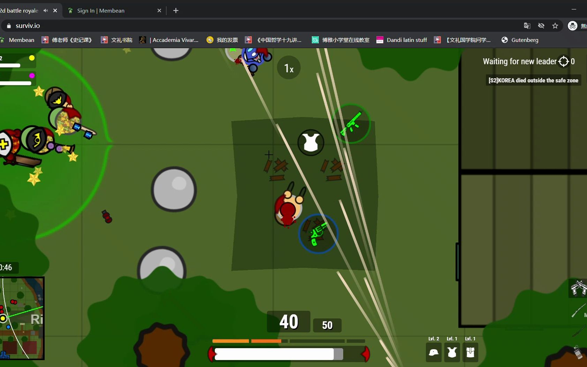
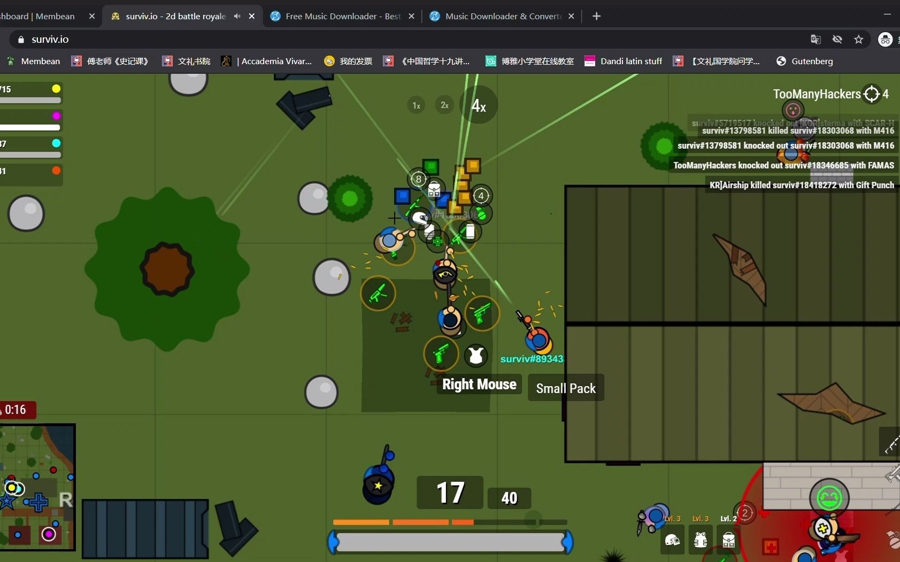

The Hard Truth About Your Surviv.io Runs
You keep dying in the first five minutes. You parachute in, grab a pistol, get melted by a shotgun, and respawn. Stop blaming the game. I have over 2000 hours in Surviv.io. I have watched thousands of players make the exact same fatal errors. You treat this 2D top-down shooter like it is a simple run-and-gun arcade game. It is not. It is a brutal game of positioning, resource management, and map awareness. Every time you get wiped, it is because you ignored the core mechanics that actually keep you alive. Read this guide. Memorize these mistakes. Fix your gameplay, or stay stuck in the bottom tier forever.

| # | Mistake | Quick Fix |
|---|---|---|
| 1 | You Loot in the Open | Always prioritize looting inside buildings or behind solid obstacles |
| 2 | You Ignore Armor Tiers | Make armor upgrades your absolute priority during the mid-game |
| 3 | You Heal in the Red Zone | Never stop moving in the red zone |
| 4 | You Fight Shotguns in the Open | Always match your weapon to the engagement distance |
| 5 | You Waste Your Healing Items | Strictly manage your healing inventory |
You Loot in the Open
You parachute down, see a crate, and immediately start smashing it while standing in the middle of an open field. You ignore the buildings and just run from bush to bush. You think moving fast makes you safe. You are completely exposed to 360 degrees of fire. You do not check your corners, and you do not use the map structures to block line of sight. You are basically a walking target practice dummy for anyone with a scoped weapon.
Surviv.io is a 2D top-down game. There is no three-dimensional cover. If you are in the open, you are visible to everyone. A player with a sniper rifle or even an assault rifle will spot you from across the map and delete your health bar before you even draw your weapon. When you loot in the open, you sacrifice all positional advantage. You cannot react to incoming fire because you have zero cover to hide behind. One bullet from a high-tier weapon is all it takes to end your match instantly.
Always prioritize looting inside buildings or behind solid obstacles. When you parachute, aim for a cluster of buildings. Clear the rooms first. If you need to smash crates outside, do it from inside a doorway or while pressed against a wall. Keep your body behind hard cover while you loot. If you must cross an open area, use the red zone timer to your advantage and move directly to the next structure. Never stop in the middle of nowhere to heal or loot.
You Ignore Armor Tiers
You find a level one helmet and a level one vest, and you just keep them for the entire match. You see a level two or level three armor drop, but you are too busy chasing kills to swap your gear. You think your aim is enough to carry you. You completely ignore the massive damage mitigation that higher-tier armor provides. You walk into fights feeling invincible because you have some armor, completely unaware that your low-tier gear is basically tissue paper against end-game weapons.
Armor tiers are the single most important factor in surviving gunfights. A level three vest drastically reduces incoming damage compared to a level one vest. When you skip armor upgrades, you lose the mathematical advantage in every single engagement. Against a player with max-tier armor and a high-damage shotgun or assault rifle, your low-tier armor will shatter in seconds. You will lose trades you should easily win. The game punishes gear negligence with a swift death.
Make armor upgrades your absolute priority during the mid-game. Whenever you kill an enemy or loot a high-value area, immediately check their helmet and vest. Swap your gear if their tier is higher. Do not just grab their weapons and leave their armor. If you find a level three chest, take it immediately. Keep your inventory organized so you can swap gear in a fraction of a second during a fight. Upgrading your armor is just as critical as upgrading your weapons.

You Heal in the Red Zone
The red zone starts shrinking. You are caught outside the safe area. Instead of sprinting to cover, you stop and start using bandages or a first aid kit. You think you can heal up while the zone burns you. You stand completely still, watching your health bar tick up, ignoring the fact that the zone damage is eating your health just as fast. You prioritize a minor health restore over immediate repositioning.
The red zone in Surviv.io deals continuous, unavoidable damage. It is designed to force movement and shrink the playable area. When you stop to heal inside the red zone, you are fighting a losing battle against the game mechanics. The zone damage will outpace your healing items, especially if you are only using bandages. Worse, you are standing completely still. An enemy will see you stationary in the open and easily pick you off. You die to the zone and the enemy at the same time.
Never stop moving in the red zone. If you are caught outside the safe area, sprint directly toward the nearest cover or the white zone boundary. Do not use healing items until you are completely inside the safe zone and behind solid cover. If you are low on health, use a medkit only when you are safe and stationary. Save your bandages and first aid kits for micro-heals behind cover during an actual firefight. Positioning always beats healing.
You Fight Shotguns in the Open
You hear an enemy breaching a building. You pull out your assault rifle and stand in the middle of the room to fight them. You try to out-aim them with a mid-range weapon at point-blank distance. You completely ignore the weapon matchup. You bring a gun designed for distance into a tiny phone-booth fight. You expect your rate of fire to beat their raw burst damage, completely misunderstanding how close-quarters combat works in this game.
Shotguns in Surviv.io have massive close-range damage and spread. If an enemy pushes you with a shotgun inside a building, your assault rifle cannot output enough damage fast enough to stop them. They will melt your health bar in a single pump. By standing in the open inside a room, you give them the perfect angle to land every single pellet. You sacrifice the only advantage you had, which is distance, and force a fight where their weapon is mathematically superior.
Always match your weapon to the engagement distance. If you expect a close-quarters fight inside a building, equip a shotgun or a high-fire-rate submachine gun. If you are holding an angle with an assault rifle or sniper, keep your distance and force them to cross open ground. Use doorways and windows to your advantage. Let them push into your crosshairs. Never stand in the center of a room waiting for a shotgun player to walk through the door.
You Waste Your Healing Items
You take a little bit of chip damage from a stray bullet. You immediately pop a medkit to get back to full health. You use your most valuable healing items for minor scratches. You do not understand the difference between bandages, first aid kits, and medkits. You treat all healing items as if they have the same value and use the heavy ones for tiny health deficits. You drain your inventory before the final circles even start.
Healing items are finite and crucial for surviving the late game. Medkits take a long time to use and are meant for massive health recovery. Bandages are fast but only heal a small amount. First aid kits are the middle ground. When you waste a medkit to heal twenty health points, you lose the ability to fully recover after a major firefight. In the final circles, you will need those medkits to survive the intense, multi-directional damage. Running out of heavy heals guarantees an early exit.
Strictly manage your healing inventory. Use bandages for minor chip damage under fifty percent health. Use first aid kits to quickly get back into the fight after a medium skirmish. Save your medkits exclusively for when you are critically low after a major engagement or when you need to top off completely before pushing the final zone. Always keep at least two medkits in your inventory for the end game. Heal smart, not just fast.

The Bottom Line
The number one thing that separates the top players from the endless sea of casuals in Surviv.io is discipline. Amateurs rely on raw aim and luck. Veterans rely on positioning, resource management, and game sense. You must respect the 2D top-down mechanics, prioritize your armor, and never waste your healing items. Stop rushing into open fields and start playing the map. Fix these five fatal mistakes, and you will instantly climb the ranks. Drop into your next match with a plan. Stop feeding the lobby, and start hunting the winners.